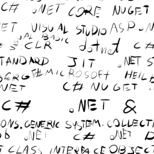
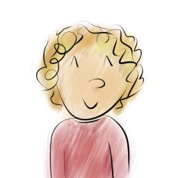

O mnie
Michał Pietruszewski


Nazywam się Michał Pietruszewski, mam 15 lat, uczęszczam do Zespołu Szkół
Techniczno-Informatycznych
w Gliwicach, a dokładniej do Technikum nr.1; jestem na profilu Technik - programista. Jestem
twórcą
tej strony, poniżej możesz dowiedzieć się o mnie czegoś więcej
Ta strona - Dotdetonator została w całości stworzona przeze mnie, w ramach zadania, które zadał
mi mój nauczyciel projektowania stron internetowych. Na mojej stronie używam wyłącznie moich
obrazów, a jedyne co zapożyczyłem to czcionki.
Programowaniem zainteresowałem się kilka lat temu, gdy będąc rozczarowany tym, że nie potrafię
znaleźć takiej gry komputerowej, która łączyłaby wszystkie moje ulubione elelmenty, które lubię
postanowiłem że stworze własną. Tym sposobem zacząłem interesować się Unity (choć jeszcze wcale
nie programowałem), a z tym również Infomatyką na ogół.
Mój wujek widząc moje zainteresowanie, wysłał mi w prezencie swoje Raspberry pi 4, a mój
przyjaciel, który zachęcił mnie do wybrania ZSTI pomagał mi przy używaniu płytki. Ten właśnie
przyjaciel nauczył mnie podstaw C# i zaczeliśmy tworzyć wspólnie bota do Discorda w .NET.
Najpierw głównie programował on, pokazywał mi jak działa C#. Stworzył około 300 linijek kodu,
które pozwoliły na komunikacje z serwerami discorda oraz podstawowe funkcje, później tylko
refaktoryzował mój kod. W kilka miesięcy napisałem ponad 1000 linii kodu!
Dowiedz się więcej o moich projektach...